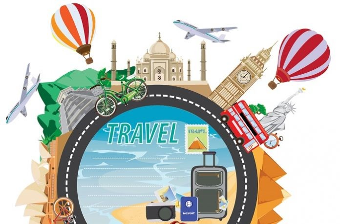

BİLGİSAYAR OYUNLARI
İlgi alanlarımın arasında bilgisayar oyunları çok büyük bir yer kaplıyor.
Arkadaşlarım
ile güzel vakit geçirmek sinir stres atmak ve eğlenmek için bilgisayar oyunu oynarım.
Aynı
zamanda
oynadığım oyundan aldığım kısa kliplerimi de Youtube'a atarım. Bu yüzden kendi çapımda
bir
youtube kanalım
var. Eski zamanlarda Counter-Strike Global Offensive ve Zula gibi bir çok oyunda
profesyonel
oynadım.
Şuan ise Valorant Oyununda arkadaşlarımla kurduğumuz Akatsuki takımında oynamaya devam
ediyorum.
Youtube Kanal Linkim:
Youtube Kanalım

SEYAHAT ETMEK
İlgi alanlarımın arasında seyehat etmek çok büyük bir yer kaplıyor. Seyahat etmek hayatımızı renklendirmenin, güzelleştirmenin en güzel yollarından biridir.Dünyada sadece yaşadığımız şehir yok. Onlarca ülke, binlerce şehir var ve her şehrin farklı bir kültürü var. Farklı kültürlerle yoğrulmuş yeni yerleri keşfederken ve yepyeni kültürler tanırken gezmenin ne kadar büyüleyici bir şey olduğunun farkına varabilirsiniz. Bu kültürleri tanımamızı sağlayacak yeni insanlarla tanışır, yepyeni yemekler tadarız. Gezdiğimiz şehirdeki insanlar, tarihi eserler, hatta coğrafya bile bize güzel bir film izliyormuşuz, güzel bir kitap okuyormuşuz hissi verir!Keşfettiğiniz yeni kültürler sayesinde farklı bakış açıları geliştirir ve dünyaya, sorunlarınıza bambaşka perspektiflerden bakabilirsiniz. Yani seyahat sadece gezdiğiniz dönemi değil, bütün hayatınızı, alışkanlıklarınızı, yaklaşımlarınızı etkileyebilecek bir şey. Kendini geliştirmek ve hayata bambaşka bakış açıları ile yaklaşabilmek hiç kuşku yok ki gezmenin faydalarından biri!
YAZILIM
Bilgisayar Mühendisliğini istememin en büyük sebeplerinden biri de Yazılıma olan merağımdı. Yazılım dünyası kocaman bir dünya, günümüzdeki her şey teknolojinin eseri insan meraklanmadan duramıyor. Bilgisayarla hep iç içe büyüdüm. Belli bir zamandan sonra oyunları değilde oyunların nasıl yapıldığını merak etmeye başlamıştım ve bu yüzden Bilgisayar Mühendisliği okumaya karar verdim. Şu anda da bölümümden çok memnunum. Yeni bir yazılım dili öğrenmek ne kadar zor olsada bence çok eğlenceli. :)
POKEMON
Pokemon karakterlerini çok seviyorum. Hatta evimde bir kaç tane pokemon oyuncağı bile var bu yüzden bu kısımda size bir kaç pokemon karakteri göstermek istedim. Örnek olarak Pikachu, Ditto, Squirtle gibi bir çok pokemon ismini yazarak resmini görüntüleyebilirsiniz.